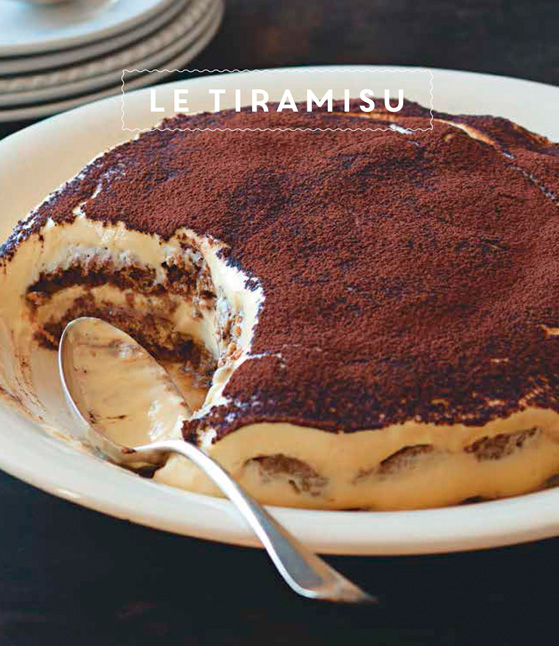

Recette du Tiramisuze

Attention, l'abus d'alcool est dangereux à la santé!
Ingrédients pour 4 personnes
- 500mL de café suze
- 250g de mascarpone
- 4 oeufs
- 250g sucre
- chocolat en poudre
- 1 paquet de gateaux patissier
Préparation
- Séparer les blancs et jaunes d'oeufs
- Mélanger les jaunes avec la mascarpone et le sucre
- Fouetter les blancs en neige
- Incorporer les blancs en neige dans le mélange
- Tremper les gateaux dans le café suze et mettez les au fond d'un récipient
- Recouvrer avec le mélange et recommencer la 5ème étape
- Mettez au frais pendant 4h et dégustez
Accueil